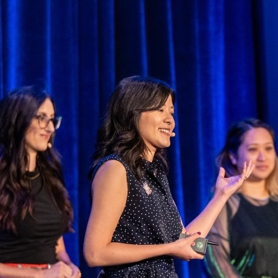

About Me
Hello! I'm Caroline, a Senior Product Designer on the Enterprise Design team at Disney.
For the past 4 years at Disney, I've led design for a global commerce management platform that powers thousands of pricing and subscription plans for Disney+, Hulu, and ESPN+. My work tackles the challenges of scale, complexity, and operational efficiency.
Prior to Disney, I worked for about 7 years crafting enterprise, smart device, and mobile experiences at Belkin, LMU, and Nationwide Insurance.
I'm deeply passionate about creating high quality experiences that bring joy to others, whether through work, personal relationships, or community groups. Work-wise, I particularly thrive in complex domains, unraveling dependencies and edge cases, identifying trade-offs, and aligning multiple stakeholder teams through engaging and productive workshops.
I consider my 2 homes to be Cincinnati, Ohio and Los Angeles, California. I love cooking cuisines from across the world 🍳 and have recently started learning to play the violin for the first time! 🎻

My story
Scientist-turned-designer
Before becoming a designer, I studied biomedical engineering in undergraduate school and then medicine at The Ohio State University for 2 years from 2013-2015. At the time, I believed it was the best path for me to have a positive impact on the world.
However, I felt my creative and empathetic mind drawn not to the intricate details of anatomy and physiology, but to the emotional experiences of patients, families, health care workers, and students. I saw potential for seemingly small changes, like helpful explanations and more organized processes, to make a big difference to their day-to-day lives. While I valued the rigor of medicine, I realized that the most profound impact I could have was not through clinical breakthroughs, but through improving human experiences, and so I decided to change my career to UX design, a field that proved to be a much better fit.
Foundation in human-computer interaction
As I transitioned into the world of UX design, I knew that to make the impact I desired, I needed to build a strong base of skills and learn from experts and successful examples of great experiences.
After researching many programs, I ultimately pursued a Master's in Human-Computer Interaction from Carnegie Mellon University in 2016, where I gained foundational skills in user research, interaction design, programming, and prototyping. Most importantly, I learned how to think strategically about products, not just considering the visuals and functions but the overarching problems they aim to solve and how to apply research and collaboration methods to understand and tackle those problems.
Overall, the experience validated my passion for working together with teams to create impactful experiences and helped me gain a life-long community of passionate and ambitious designers, researchers, engineers, and product managers.
Passion for community-building
I believe a cohesive team is the most powerful engine for great work, because the feeling of community and belonging ultimately makes each member of a group feel more motivated, inspired, and fulfilled, leading to the most positive outcomes long-term.
This philosophy stems from my college years, where I first experienced a feeling of camaraderie and team spirit as a member and eventual leader of the student performance organization, USC Kazan Taiko. The never-ending motivation I felt to improve the organization was reflected in the members' eyes, too. Since then, I've continued to strive to create that feeling of community in all of the teams and groups I join.
Some examples of my ongoing efforts to build community:
- Guest lecturer on prototyping for the CMU MHCI program, sharing my experience with students to support their growth (June 2025)
- Co-founder and coordinator of the CMU MHCI SoCal Alumni group, organizing networking, speaker, workshop, and panel events to build connections between alumni and foster sharing of skills and experience (2023 - Present)
- Coordinator of cultural and educational events for our Disney Enterprise Design team, helping to build team camaraderie and up-leveling our skills (2022 - 2024)
- Organizer of multi-day workshops for my Genie+ product team, facilitating alignment on product vision, OKRs, and roadmap (2022 - Present)